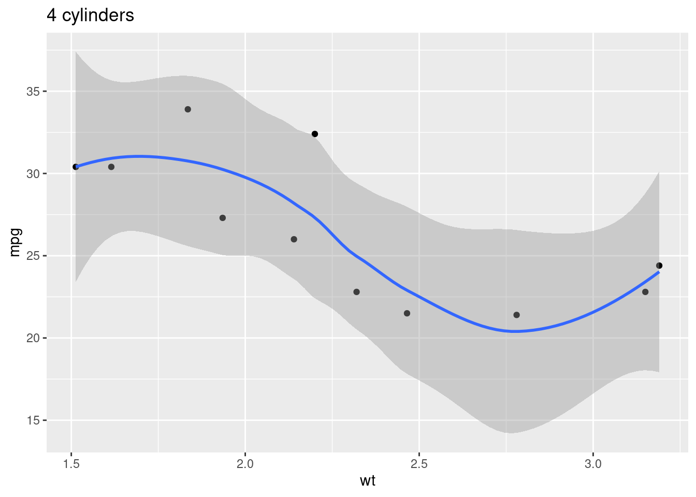
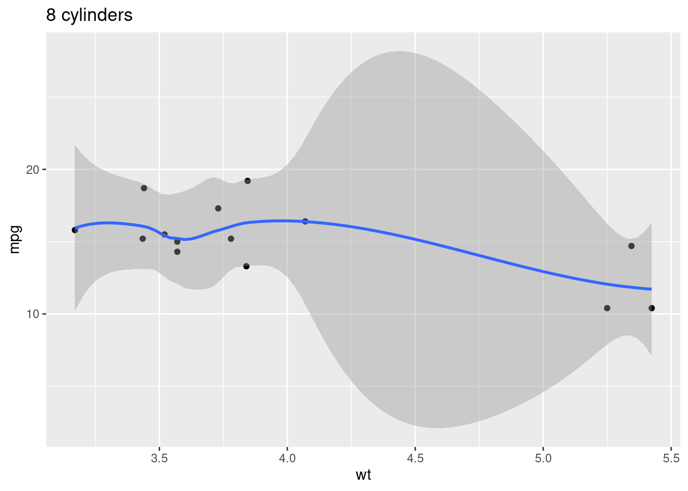
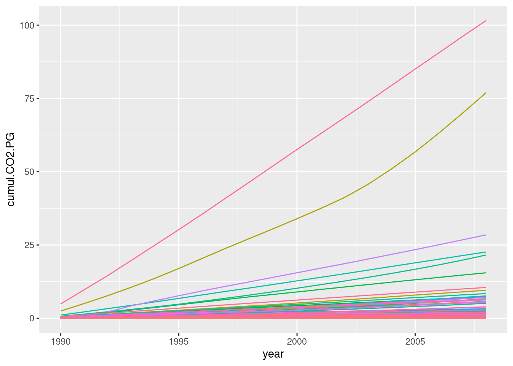

install.packages("tidyverse")R tidyverse: loops and data tidying
Setting up
If needed, review the installation instructions.
- If you are using your own laptop please open RStudio
- Make sure you have a working Internet connection
- On the Library’s training computers:
- Log in with your UQ username and password
- Make sure you have a working Internet connection
- Open the ZENworks application
- Look for “RStudio”
- Double click on RStudio, which will install both R and RStudio
With RStudio open, let’s make sure we have the necessary packages installed by running this command (this might take a few minutes):
This will install all the Tidyverse packages (and their dependencies).
What are we going to learn?
tidyr and purrr, just like dplyr and ggplot2, are core to the Tidyverse.
- tidyr can be used to tidy your data
- purrr is useful to apply functions iteratively on lists or vectors
Create a project and a script
Use the project menu (top right) to create a “New project…”. Let’s name this one “tidyverse”.
We also want to work more comfortably by typing our code in a script. You can use the new file dropdown menu, or Ctrl+Shift+N, and save your script as “process.R” in the current working directory.
Load the necessary packages
We can use one single command to load the 8 core Tidyverse packages:
library(tidyverse)── Attaching core tidyverse packages ──────────────────────── tidyverse 2.0.0 ──
✔ dplyr 1.2.0 ✔ readr 2.2.0
✔ forcats 1.0.1 ✔ stringr 1.6.0
✔ ggplot2 4.0.2 ✔ tibble 3.3.1
✔ lubridate 1.9.5 ✔ tidyr 1.3.2
✔ purrr 1.2.1
── Conflicts ────────────────────────────────────────── tidyverse_conflicts() ──
✖ dplyr::filter() masks stats::filter()
✖ dplyr::lag() masks stats::lag()
ℹ Use the conflicted package (<http://conflicted.r-lib.org/>) to force all conflicts to become errorsTidy data
Tidy data makes it easy to transform and analyse data in R (and many other tools). Tidy data has observations in rows, and variables in columns. The whole Tidyverse is designed to work with tidy data.
Often, a dataset is organised in a way that makes it easy for humans to read and populate. This is usually called “wide format”. Tidy data is usually in “long” format.
The ultimate rules of tidy data are:
- Each row is an observation
- Each column is a variable
- Each cell contains one single value
To learn more about Tidy Data, you can read Hadley Wickham’s 2014 article on the topic.
Import data
We are using a dataset from the World Bank, which contains data about energy consumption and greenhouse gas emissions.
Let’s download the file:
# download data, save locally
download.file(url = "https://raw.githubusercontent.com/uqlibrary/technology-training/master/R/tidyverse_next_steps/data_wb_climate.csv",
destfile = "data_wb_climate.csv")… and read the data into an object:
# read CSV into an object
climate_raw <- read_csv("data_wb_climate.csv",
na = "..")Rows: 1165 Columns: 28
── Column specification ────────────────────────────────────────────────────────
Delimiter: ","
chr (4): Country code, Country name, Series code, Series name
dbl (23): SCALE, Decimals, 1990, 1991, 1992, 1993, 1994, 1995, 1996, 1997, 1...
lgl (1): 2011
ℹ Use `spec()` to retrieve the full column specification for this data.
ℹ Specify the column types or set `show_col_types = FALSE` to quiet this message.We defined with the na argument that, in this dataset, missing data is recorded as “..”.
You can use View() to explore your dataset. We can see that it doesn’t respect the tidy data principles in a couple of ways, the most obvious one being that different years are spread out between different columns.
Reshaping data
Lengthening
To go from wide format to long format, we can use the tidyr function pivot_longer(). Here, we want to gather all the columns titled with a year: we store the data in a “value” variable, and the years in a “year” variable.
climate_long <- pivot_longer(climate_raw,
`1990`:`2011`,
names_to = "year",
values_to = "value")Column names are stored as character by default, so we also use an extra argument to convert the type for the year column from character to integer:
climate_long <- pivot_longer(climate_raw,
`1990`:`2011`,
names_to = "year",
values_to = "value",
names_transform = as.integer)We had to use backticks to refer to our year columns because they are numbers. We have to do the same for columns with spaces in their names, so let’s replace those spaces with dots:
climate_long <- pivot_longer(climate_raw,
`1990`:`2011`,
names_to = "year",
values_to = "value",
names_transform = as.integer) |>
rename_with(make.names)This is better, but there is still an issue: our value variable contains many different indicators (i.e. entirely different units).
Widening
To do the opposite, going from long to wide format, we can use the pivot_wider() function.
We have single observations spread across several rows, so we should spread the “value” column.
First, let’s keep a record of the correspondence between long descriptive variable names and their “code”, for later reference:
codes <- climate_long |>
select(Series.code, Series.name) |>
unique()
codesThis will be our key to variable details, or “code book”, for future reference.
Now, let’s widen the data (and remove some useless columns with dplyr::select()):
climate_tidy <- climate_long |>
select(-Series.name, -SCALE, -Decimals) |>
pivot_wider(names_from = Series.code,
values_from = value)Challenge 1: Code comprehension
There’s one more cleaning step we need to apply.
Have a look at this block of code. What do you think it does?
groups <- c("Europe & Central Asia",
"East Asia & Pacific",
"Euro area",
"High income",
"Lower middle income",
"Low income",
"Low & middle income",
"Middle income",
"Middle East & North Africa",
"Latin America & Caribbean",
"South Asia",
"Small island developing states",
"Sub-Saharan Africa",
"Upper middle income",
"World")
climate_tidy <- climate_tidy |>
filter(!Country.name %in% groups)Turns out this dataset contains grouped data as well as unique countries. Here, we created a vector of group names, and removed them from the data by using dplyr’s filter() function (inverting the filter with !).
We can now check that we’ve only got single countries left:
unique(climate_tidy$Country.name)Visualising
Now that we have clean, tidy data, we can process and visualise it more comfortably! For example, to visualise the increase in KT of CO2-equivalent for each country:
climate_tidy |>
ggplot(aes(x = year,
y = EN.ATM.CO2E.KT,
group = Country.name)) +
geom_line()Warning: Removed 1091 rows containing missing values or values outside the scale range
(`geom_line()`).Challenge 2
Looks like our data is missing after 2008, so how can we remove that?
One solution is to remove rows with missing data:
co2e_no_na <- climate_tidy |>
drop_na(EN.ATM.CO2E.KT)
ggplot(co2e_no_na,
aes(x = year,
y = EN.ATM.CO2E.KT,
group = Country.name)) +
geom_line()Alternatively, we could filter on the actual year. (Which would not be ideal if the data was to be updated in the future!)
There are a lot of countries represented here. This kind of visualisation would benefit from focusing on a handful of countries we’re interested in, depending on what story we are telling. We can then overlay two line geometries: one for the whole dataset, and the other for our selection.
# find top 4 for 2008
top4 <- co2e_no_na |>
filter(year == 2008) |>
slice_max(EN.ATM.CO2E.KT, n = 4)
# plot them on top of the rest
ggplot(co2e_no_na,
aes(x = year,
y = EN.ATM.CO2E.KT,
group = Country.name)) +
geom_line(colour = "darkgrey") +
geom_line(data = filter(co2e_no_na, Country.name %in% top4$Country.name),
mapping = aes(colour = Country.name)) +
labs(y = "CO2-equivalent (KT)",
colour = "Top emitters")Functional programming
Functional programming (as opposed to “imperative programming”) makes use of functions rather than loops to iterate over objects. The functions will allow to simplify our code, by abstracting common building blocks used in different cases of iteration. However, it means that there will usually be a different function for each different pattern.
You can iterate over elements by using:
- the basic building blocks in R (for loops, while loops…), or
- the
applyfunction family from base R, or - the purrr functions.
Imagine we want to find out the median value for each variable in the mtcars dataset. Here is an example of a for loop:
output <- vector("double", ncol(mtcars))
for (i in seq_along(mtcars)) {
output[[i]] <- median(mtcars[[i]])
}
output [1] 19.200 6.000 196.300 123.000 3.695 3.325 17.710 0.000 0.000
[10] 4.000 2.000Better than having the same code repeated 11 times!
We allocate space in the expected output first (more efficient). We then specify the sequence for the loop, and put what we want to iterate in the loop body.
The apply family in base R is useful to replace for loops, but the purrr functions are easier to learn because they are more consistent. This package offers several tools to iterate functions over elements in a vector or a list (e.g. a dataframe).
The map family
At purrr’s core, there is the map family:
map()outputs a list.map_lgl()outputs a logical vector.map_int()outputs an integer vector.map_dbl()outputs a double vector.map_chr()outputs a character vector.
For example, to do a similar operation to our previous for loop:
map_dbl(mtcars, median) mpg cyl disp hp drat wt qsec vs am gear
19.200 6.000 196.300 123.000 3.695 3.325 17.710 0.000 0.000 4.000
carb
2.000 A lot leaner, right?
The map functions automatically name the values in the resulting vector, which makes the result easier to read.
Lets try a different type of output. Here, we want to find out which columns in the World Bank dataset are numeric variables:
map_lgl(climate_tidy, is.numeric) Country.code Country.name year
FALSE FALSE TRUE
EG.USE.COMM.GD.PP.KD EG.USE.PCAP.KG.OE EN.ATM.CO2E.KT
TRUE TRUE TRUE
EN.ATM.CO2E.PC EN.ATM.CO2E.PP.GD.KD
TRUE TRUE If we don’t want to use the default behaviour of the mapped function, we can use extra arguments to pass to it. For example, for a trimmed mean:
map_dbl(mtcars, mean, trim = 0.2) mpg cyl disp hp drat wt qsec vs
19.2200 6.3000 219.1750 137.9000 3.5755 3.1970 17.8175 0.4000
am gear carb
0.3500 3.5500 2.7000 Just like most functions in the Tidyverse, the first argument is the data that we want to process (which means we can use the pipe). The second argument is the name of the function we want to apply, but it can also be a custom anonymous function. For example:
# round the mean to closest integer
map_int(mtcars, \(x) round(mean(x))) mpg cyl disp hp drat wt qsec vs am gear carb
20 6 231 147 4 3 18 0 0 4 3 # is the maximum more than three times the minimum?
map_lgl(mtcars, \(x) max(x) > 3 * min(x)) mpg cyl disp hp drat wt qsec vs am gear carb
TRUE FALSE TRUE TRUE FALSE TRUE FALSE TRUE TRUE FALSE TRUE We have to use the shorthand backslash syntax \(x) to introduce a custom anonymous function, and the argument x to place the element being processed.
Challenge 3: custom formula
How can we find out the number of unique values in each variable of the starwars data.frame?
map_int(starwars, \(x) length(unique(x))) name height mass hair_color skin_color eye_color birth_year
87 46 39 12 31 15 37
sex gender homeworld species films vehicles starships
5 3 49 38 24 11 16 Splitting
To split a dataset and map an operation to separate parts, we can use the group_split() function:
unique(mtcars$cyl)[1] 6 4 8mtcars |>
group_split(cyl) |> # split into three dataframes
map(summary) # mapped to each dataframe[[1]]
mpg cyl disp hp drat
Min. :21.40 Min. :4 Min. : 71.10 Min. : 52.00 Min. :3.690
1st Qu.:22.80 1st Qu.:4 1st Qu.: 78.85 1st Qu.: 65.50 1st Qu.:3.810
Median :26.00 Median :4 Median :108.00 Median : 91.00 Median :4.080
Mean :26.66 Mean :4 Mean :105.14 Mean : 82.64 Mean :4.071
3rd Qu.:30.40 3rd Qu.:4 3rd Qu.:120.65 3rd Qu.: 96.00 3rd Qu.:4.165
Max. :33.90 Max. :4 Max. :146.70 Max. :113.00 Max. :4.930
wt qsec vs am
Min. :1.513 Min. :16.70 Min. :0.0000 Min. :0.0000
1st Qu.:1.885 1st Qu.:18.56 1st Qu.:1.0000 1st Qu.:0.5000
Median :2.200 Median :18.90 Median :1.0000 Median :1.0000
Mean :2.286 Mean :19.14 Mean :0.9091 Mean :0.7273
3rd Qu.:2.623 3rd Qu.:19.95 3rd Qu.:1.0000 3rd Qu.:1.0000
Max. :3.190 Max. :22.90 Max. :1.0000 Max. :1.0000
gear carb
Min. :3.000 Min. :1.000
1st Qu.:4.000 1st Qu.:1.000
Median :4.000 Median :2.000
Mean :4.091 Mean :1.545
3rd Qu.:4.000 3rd Qu.:2.000
Max. :5.000 Max. :2.000
[[2]]
mpg cyl disp hp drat
Min. :17.80 Min. :6 Min. :145.0 Min. :105.0 Min. :2.760
1st Qu.:18.65 1st Qu.:6 1st Qu.:160.0 1st Qu.:110.0 1st Qu.:3.350
Median :19.70 Median :6 Median :167.6 Median :110.0 Median :3.900
Mean :19.74 Mean :6 Mean :183.3 Mean :122.3 Mean :3.586
3rd Qu.:21.00 3rd Qu.:6 3rd Qu.:196.3 3rd Qu.:123.0 3rd Qu.:3.910
Max. :21.40 Max. :6 Max. :258.0 Max. :175.0 Max. :3.920
wt qsec vs am
Min. :2.620 Min. :15.50 Min. :0.0000 Min. :0.0000
1st Qu.:2.822 1st Qu.:16.74 1st Qu.:0.0000 1st Qu.:0.0000
Median :3.215 Median :18.30 Median :1.0000 Median :0.0000
Mean :3.117 Mean :17.98 Mean :0.5714 Mean :0.4286
3rd Qu.:3.440 3rd Qu.:19.17 3rd Qu.:1.0000 3rd Qu.:1.0000
Max. :3.460 Max. :20.22 Max. :1.0000 Max. :1.0000
gear carb
Min. :3.000 Min. :1.000
1st Qu.:3.500 1st Qu.:2.500
Median :4.000 Median :4.000
Mean :3.857 Mean :3.429
3rd Qu.:4.000 3rd Qu.:4.000
Max. :5.000 Max. :6.000
[[3]]
mpg cyl disp hp drat
Min. :10.40 Min. :8 Min. :275.8 Min. :150.0 Min. :2.760
1st Qu.:14.40 1st Qu.:8 1st Qu.:301.8 1st Qu.:176.2 1st Qu.:3.070
Median :15.20 Median :8 Median :350.5 Median :192.5 Median :3.115
Mean :15.10 Mean :8 Mean :353.1 Mean :209.2 Mean :3.229
3rd Qu.:16.25 3rd Qu.:8 3rd Qu.:390.0 3rd Qu.:241.2 3rd Qu.:3.225
Max. :19.20 Max. :8 Max. :472.0 Max. :335.0 Max. :4.220
wt qsec vs am gear
Min. :3.170 Min. :14.50 Min. :0 Min. :0.0000 Min. :3.000
1st Qu.:3.533 1st Qu.:16.10 1st Qu.:0 1st Qu.:0.0000 1st Qu.:3.000
Median :3.755 Median :17.18 Median :0 Median :0.0000 Median :3.000
Mean :3.999 Mean :16.77 Mean :0 Mean :0.1429 Mean :3.286
3rd Qu.:4.014 3rd Qu.:17.55 3rd Qu.:0 3rd Qu.:0.0000 3rd Qu.:3.000
Max. :5.424 Max. :18.00 Max. :0 Max. :1.0000 Max. :5.000
carb
Min. :2.00
1st Qu.:2.25
Median :3.50
Mean :3.50
3rd Qu.:4.00
Max. :8.00 Using purrr functions with ggplot2 functions allows us to generate several plots in one command:
mtcars |>
group_split(cyl) |>
map(\(x) ggplot(x, aes(wt, mpg)) +
geom_point() +
geom_smooth() +
labs(title = paste(x$cyl, "cylinders"))) # give a title[[1]]`geom_smooth()` using method = 'loess' and formula = 'y ~ x'
[[2]]`geom_smooth()` using method = 'loess' and formula = 'y ~ x'
[[3]]`geom_smooth()` using method = 'loess' and formula = 'y ~ x'
Predicate functions
Purrr also contains functions that check for a condition, so we can set up conditions before iterating.
str(iris)'data.frame': 150 obs. of 5 variables:
$ Sepal.Length: num 5.1 4.9 4.7 4.6 5 5.4 4.6 5 4.4 4.9 ...
$ Sepal.Width : num 3.5 3 3.2 3.1 3.6 3.9 3.4 3.4 2.9 3.1 ...
$ Petal.Length: num 1.4 1.4 1.3 1.5 1.4 1.7 1.4 1.5 1.4 1.5 ...
$ Petal.Width : num 0.2 0.2 0.2 0.2 0.2 0.4 0.3 0.2 0.2 0.1 ...
$ Species : Factor w/ 3 levels "setosa","versicolor",..: 1 1 1 1 1 1 1 1 1 1 ...iris |>
map_dbl(mean) # warning, NA for SpeciesWarning in mean.default(.x[[i]], ...): argument is not numeric or logical:
returning NASepal.Length Sepal.Width Petal.Length Petal.Width Species
5.843333 3.057333 3.758000 1.199333 NA iris |>
discard(is.factor) |>
map_dbl(mean) # clean!Sepal.Length Sepal.Width Petal.Length Petal.Width
5.843333 3.057333 3.758000 1.199333 starwars |>
keep(is.character) |>
map_int(\(x) length(unique(x))) name hair_color skin_color eye_color sex gender homeworld
87 12 31 15 5 3 49
species
38 is.factor() and is.character() are examples of “predicate functions”.
To return everything, but apply a function only if a condition is met, we can use map_if():
climate_tidy |>
map_if(is.numeric, round) |>
str()List of 8
$ Country.code : chr [1:4796] "ABW" "ABW" "ABW" "ABW" ...
$ Country.name : chr [1:4796] "Aruba" "Aruba" "Aruba" "Aruba" ...
$ year : num [1:4796] 1990 1991 1992 1993 1994 ...
$ EG.USE.COMM.GD.PP.KD: num [1:4796] NA NA NA NA NA NA NA NA NA NA ...
$ EG.USE.PCAP.KG.OE : num [1:4796] NA NA NA NA NA NA NA NA NA NA ...
$ EN.ATM.CO2E.KT : num [1:4796] 1841 1929 1723 1771 1764 ...
$ EN.ATM.CO2E.PC : num [1:4796] 30 30 25 24 23 22 22 22 19 19 ...
$ EN.ATM.CO2E.PP.GD.KD: num [1:4796] NA NA NA NA NA NA NA NA NA NA ...This results in a list in which the elements are rounded only if they store numeric data.
Using the Tidyverse packages together
Now, let’s create another visualisation with our climate dataset. In this one, we use functions from 4 packages: tidyr, dplyr, stringr and ggplot2.
# cumulative and yearly change in CO2 emissions dataset
climate_cumul <- climate_tidy |>
drop_na(EN.ATM.CO2E.KT) |>
arrange(Country.name, year) |>
group_by(Country.name) |>
mutate(cumul.CO2.KT = cumsum(EN.ATM.CO2E.KT),
dif.CO2.KT = EN.ATM.CO2E.KT - lag(EN.ATM.CO2E.KT)) |>
ungroup() |>
mutate(across(ends_with("KT"), \(x) x / 10^6)) |>
rename_with(\(x) str_replace(x, "KT", "PG"))
# visualise cumulative change
p <- climate_cumul |>
ggplot() +
aes(x = year,
y = cumul.CO2.PG,
colour = Country.name) +
geom_line() +
theme(legend.position = "none")
p
If you want to create an interactive visualisation, you can use plotly:
library(plotly)
ggplotly(p)Plot the annual change in PG CO2 by country:
pdif <- climate_cumul |>
ggplot() +
aes(x = year,
y = dif.CO2.PG,
colour = Country.name) +
geom_line() +
theme(legend.position = "none")
# interactive plot
ggplotly(pdif)What next
- Chapter on iteration in the book R for Data Science
- Cheatsheets:
- Explore our recommended resources, online and around UQ
- Tidy Data paper